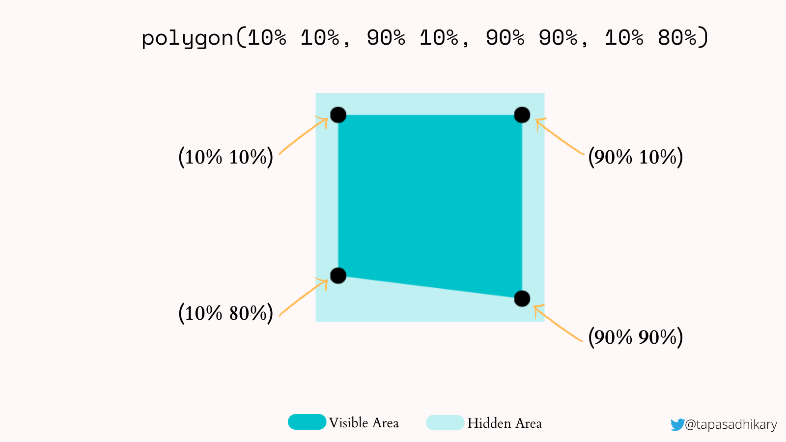
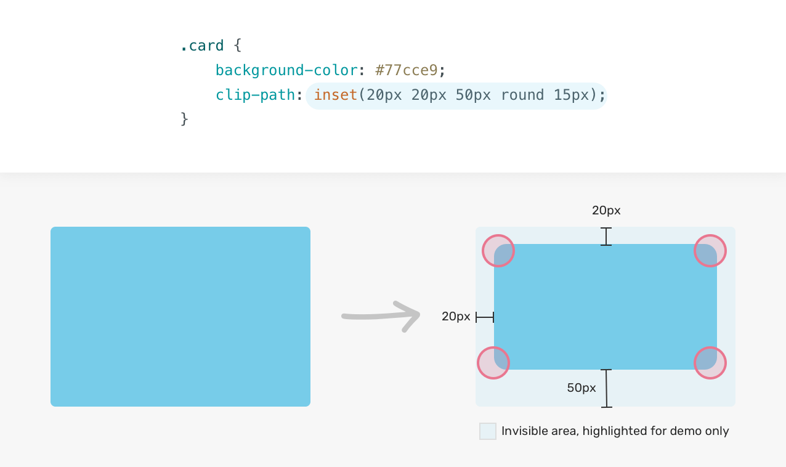
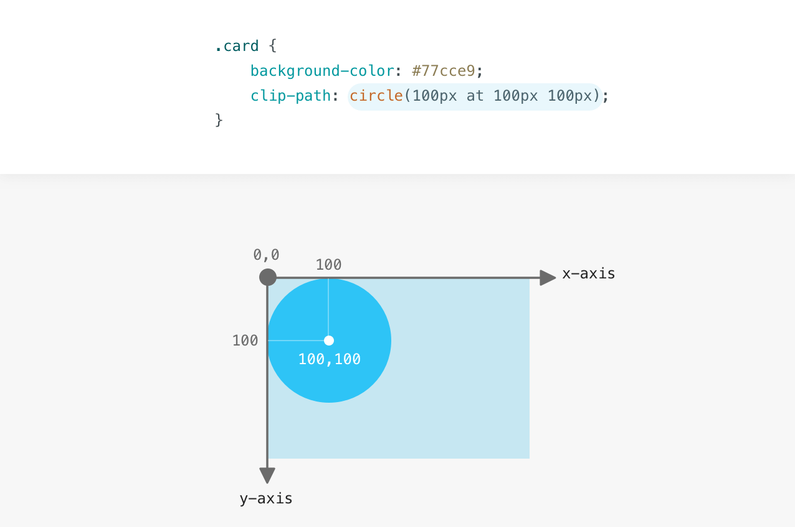
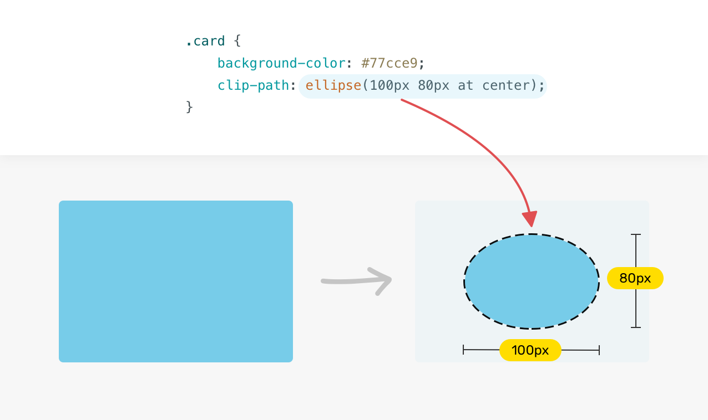
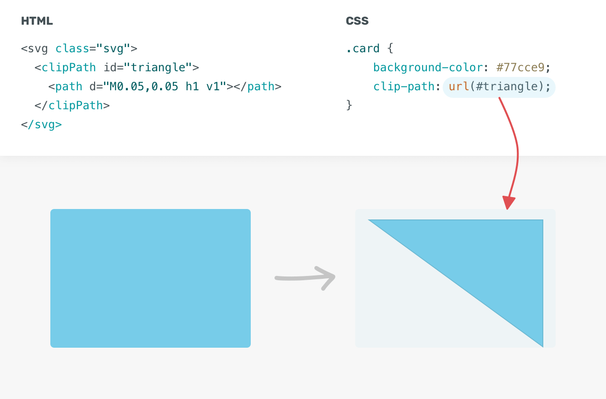

Cuts away parts of an element (like an image, text, or background). Everything outside the path becomes fully transparent and non-clickable.
The clip-path property accepts several built-in shape functions:
inset() - Creates a rectangular cutout (like internal
margins).circle() - Defines a perfect circle using
a radius and a center point.ellipse() - Defines an
oval shape using two radii and a center point.polygon()
- Connects custom coordinate points with straight lines. This is the
function used in your code.path() - Imports complex
SVG path data for organic curves and shapes.
polygon() Works
The polygon() function takes pairs of coordinates separated by commas:
polygon(X1 Y1, X2 Y2, X3 Y3, ...).
Points are usually defined in
percentages (%) or pixels (px).

The coordinate 0% 0% represents the top-left corner of the element.
The
coordinate 100% 100% represents the bottom-right corner of the
element.
You can use negative percentages (e.g., -50%) or numbers
greater than 100% (e.g., 150%) to pull points outside the physical
boundaries of the HTML element.
inset() - The Rectangular Box CutoutThe inset() function defines a rectangular clipping area by shrinking the boundaries inward from the element's edges. It behaves exactly like the CSS margin or padding shorthand.

Syntax:
inset(top right bottom left [round border-radius])
Example:
clip-path: inset(10px 20px 10px 20px round 5px);
circle() - The Perfect Circular MaskThe circle() function clips the element into a perfect circle based on a radius and a specific positioning center point.

Syntax:
circle(radius at X-coordinate Y-coordinate)
Values:
Example: clip-path: circle(40% at 50% 50%);
Creates
a circle with a radius equal to 40% of the element's width/height,
positioned exactly in the dead center.
ellipse() - The Oval Mask
The ellipse() function works identically to circle(), but it requires
two radii: one for the horizontal axis (X) and one for the vertical
axis (Y).

Syntax:
ellipse(radius-X radius-Y at X-coordinate Y-coordinate)
Example: clip-path: ellipse(50% 30% at 50% 50%);
Creates a wide oval that spans 50% horizontally and 30%
vertically from the center.
path() — The SVG PowerhouseThe path() function accepts a standard SVG path string literal. This is the most powerful clip-path option because it allows you to use complex vector math, including smooth Bezier curves and arcs , which polygon() cannot do.

Syntax: path('SVG-command-string')
Commands: Uses
standard SVG data syntax like
Example:
clip-path: path('M 10 80 C 40 10, 60 10, 90 80 Z');
Draws a smooth, curved wave mask directly onto the element.
Note: The coordinates inside path() are strictly absolute pixel values
and do not natively scale with percentages unless paired with
SVG-defined clip paths.
Note: Commas are
optional.
Note: Remember to finish the shape
with (Z) after "lifting the pen" with (M)
external: < path d="M 0,0 L 1,0 L 0.5,1 Z" / > 0 = 0%, 1
= 100%
internal: path('M 10 80 C 40 10, 60 10, 90 80 Z') 0 =
0px. 100 = 100px
clip-path just cuts out what you don't need. If you want
to set the color of shape, you need to use
background-color. If you want to put picture, you need to
use background-image etc.
Those shapes don't have
their own border. If you want to add border, you need to write a
little bit harder code. You cannot use simple
border: ; or shadows. They are going to be just cut out.
Here are a couple of ways to add borders to your shapes:
.clipped-card {
position: relative; /* Makes the background sit on top */
width: 100px;
height: 100px;
background: #2563eb; /* Border Color */
clip-path: polygon(50% 0%, 100% 38%, 82% 100%, 18% 100%, 0% 38%); /* Pentagon */
}
.clipped-card::before {
content: "";
position: absolute;
inset: 5px; /* Border thickness */
background: #898989; /* Inner Content Color */
/* Path must match exactly */
clip-path: polygon(50% 0%, 100% 38%, 82% 100%, 18% 100%, 0% 38%);
}/* Parent */
.shadow-wrapper {
filter: drop-shadow(0px 0px 4px red);
height: 100px;
width: 100px;
}
/* Child */
.drop-shadow-example {
clip-path: polygon(50% 0%, 100% 100%, 0% 100%); /* Triangle */
background: royalblue;
height: 100%;
width: 100%;
}